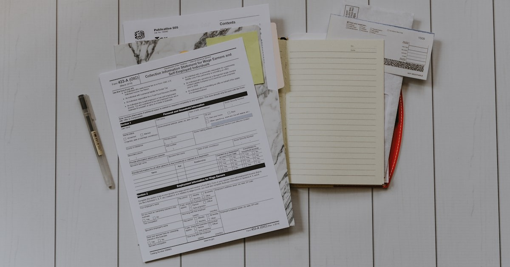

Tüm SRC Türleri İçin Ortak Evraklar
Hangi SRC türüne kayıt yaptırırsanız yaptırın, aşağıdaki evraklar her zaman istenir:
- 2 adet biyometrik fotoğraf (son 6 ay içinde çekilmiş, beyaz fon)
- Nüfus cüzdanı fotokopisi (ön ve arka yüz)
- Öğrenim belgesi fotokopisi (e-devlet üzerinden alınabilir)
- Psikoteknik raporu (SRC Kurye için ayrıca sorgulayın)
💡 Öğrenim Belgesi e-devlet'ten
Elinizde diploma veya öğrenim belgesi yoksa e-devlet üzerinden "Mezuniyet Belgesi Sorgulama" ile belgenizi dijital olarak alabilirsiniz. Ekran görüntüsü değil, e-devlet çıktısı geçerlidir.

SRC 4 Kaydı İçin Evraklar
- 2 adet biyometrik fotoğraf
- Nüfus cüzdanı fotokopisi
- Ehliyet fotokopisi (araç türüne uygun sınıf)
- Öğrenim belgesi fotokopisi
- Psikoteknik raporu

SRC 3 Kaydı İçin Evraklar
- 2 adet biyometrik fotoğraf
- Nüfus cüzdanı fotokopisi
- C veya CE sınıfı ehliyet fotokopisi
- Öğrenim belgesi fotokopisi
- Psikoteknik raporu
SRC 2 Kaydı İçin Evraklar
- 2 adet biyometrik fotoğraf
- Nüfus cüzdanı fotokopisi
- Öğrenim belgesi fotokopisi
- Psikoteknik raporu
SRC 1 Kaydı İçin Evraklar
- 2 adet biyometrik fotoğraf
- Nüfus cüzdanı fotokopisi
- Öğrenim belgesi fotokopisi
- Psikoteknik raporu
SRC Kurye Kaydı İçin Evraklar
- 2 adet biyometrik fotoğraf
- Nüfus cüzdanı fotokopisi
- Öğrenim belgesi fotokopisi
Psikoteknik Raporu İçin Evraklar
- Nüfus cüzdanı veya pasaport (aslı)
- 2 adet biyometrik fotoğraf
- Gözlük veya lens (kullanıyorsanız mutlaka yanınızda bulundurun)
- Sürücü belgesi (varsa)
⚠️ Eksik Evrakla Gelmeyin
Kayıt gününde eksik evrak olması durumunda işleminiz tamamlanamaz ve yeni bir randevu almanız gerekebilir. Listenizi önceden tamamlayın. Emin olmadığınız bir belge için bizi önceden arayın.
Fotokopi Almak İçin
Belgelerinizin fotokopilerini merkezimizde veya yakın kırtasiyelerden temin edebilirsiniz. Dijital fotokopi (telefon fotoğrafı) genellikle kabul edilmez; çıktı alınmış fotokopi istenir.